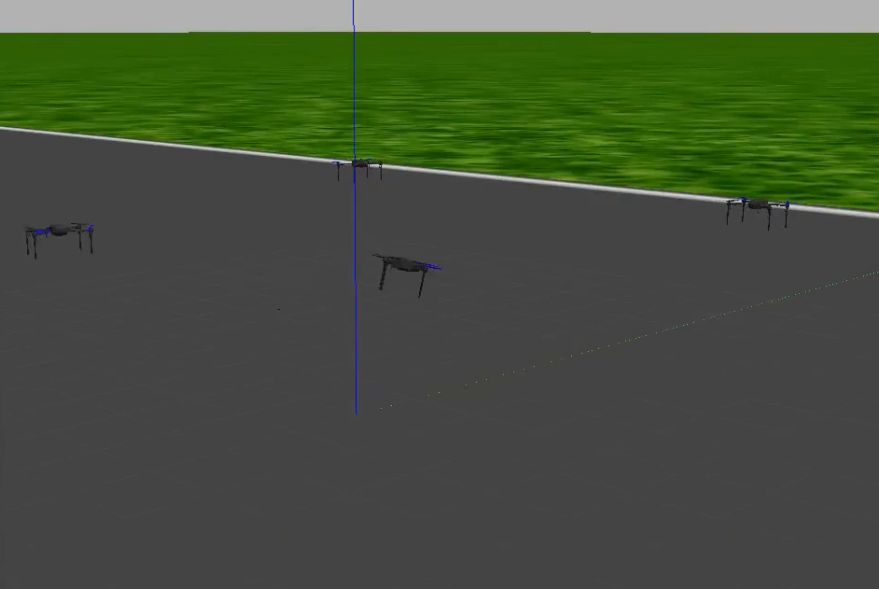
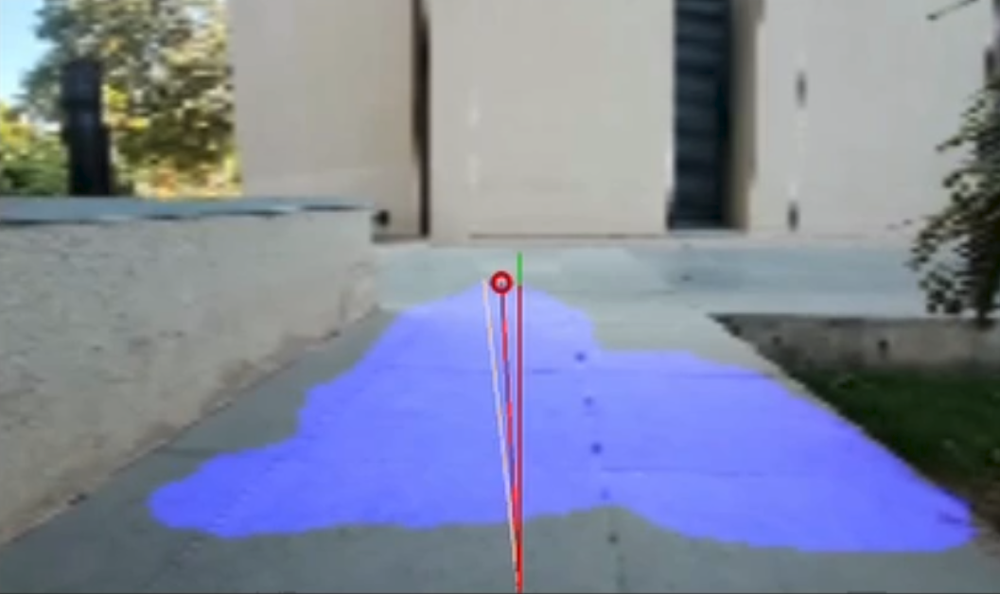
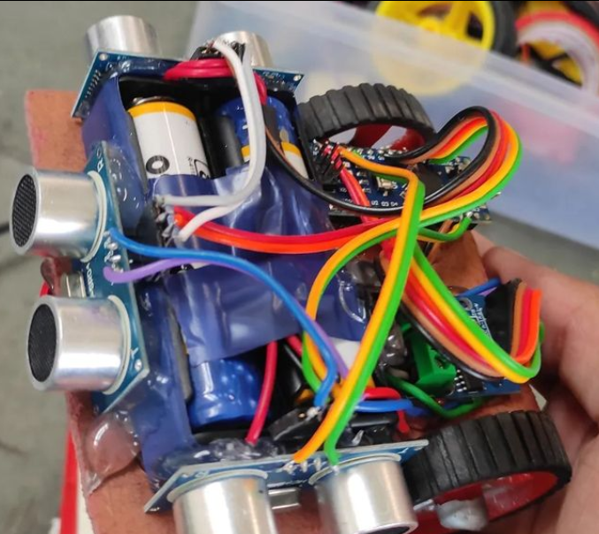
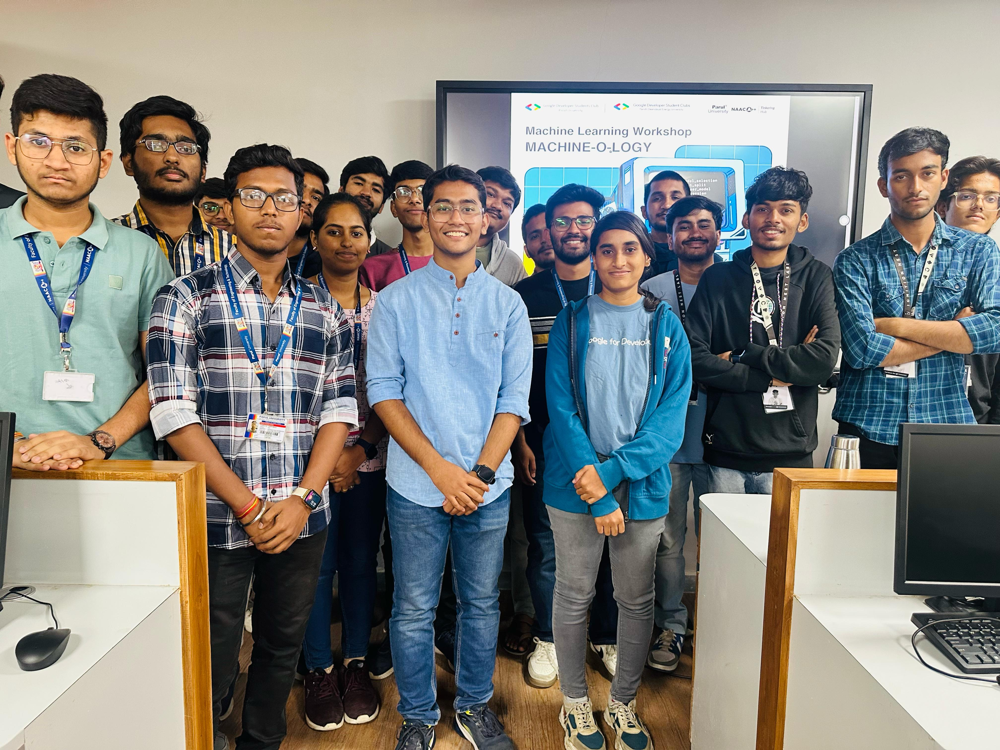
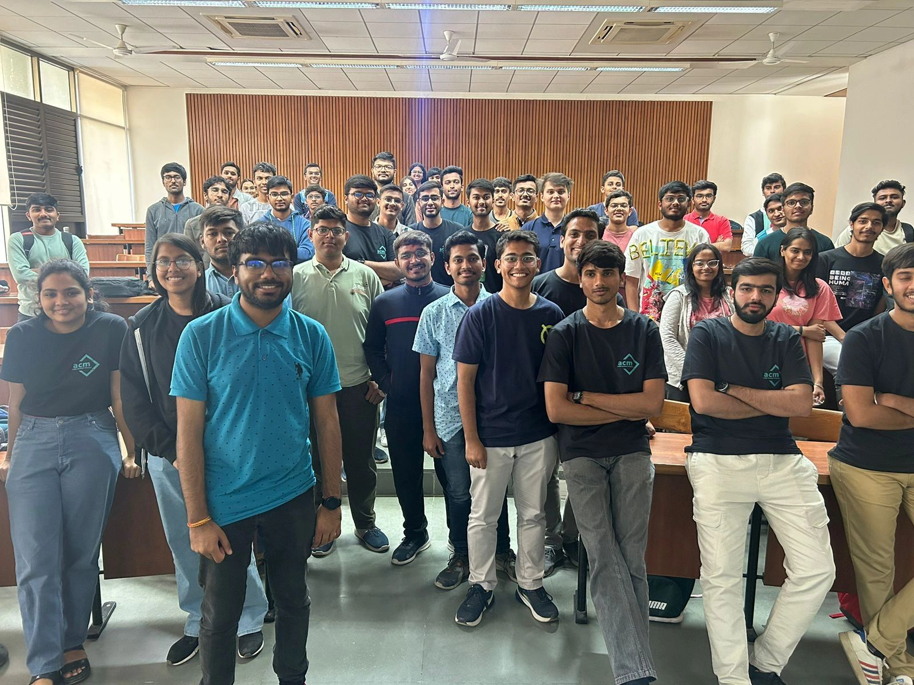
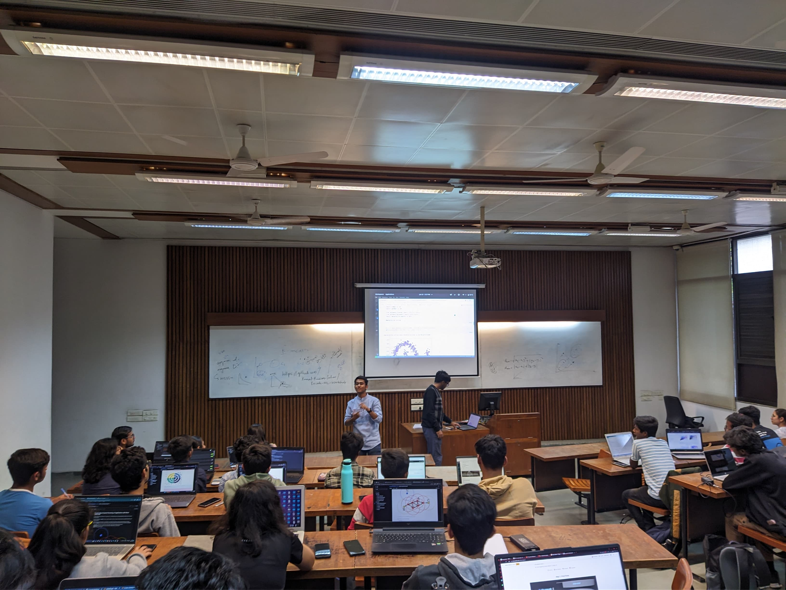
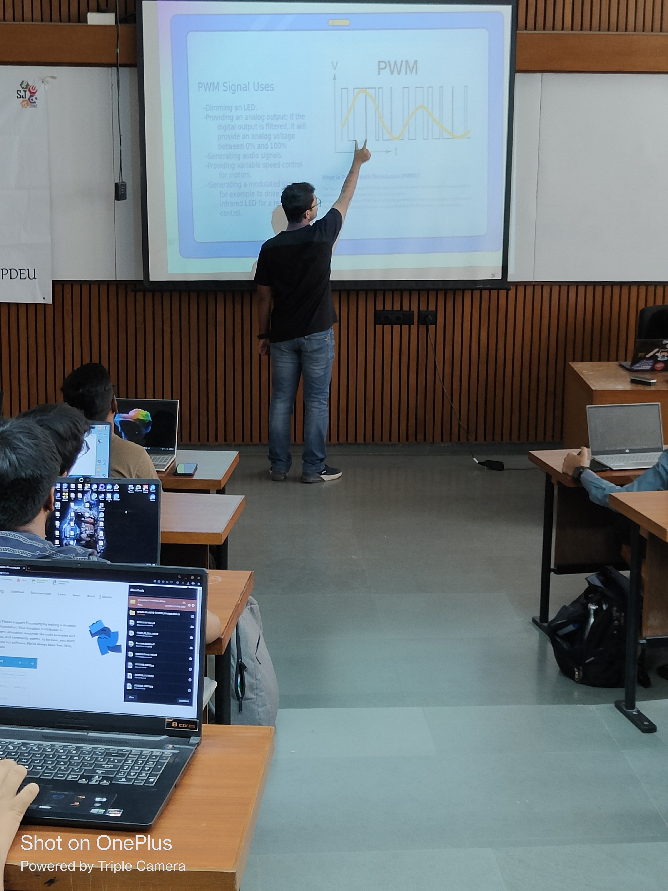

|
I am an undergraduate student exploring the fascinating intersection of Artificial Intelligence and Robotics. My interests lie in developing intelligent systems that can perceive, learn, and interact with the physical world. I am particularly passionate about advancing the fields of Representation Learning, Reinforcement Learning, Computer Vision, and Human-Centered AI. Beyond my academic pursuits, I actively share my learning journey and technical insights through my blogs, aiming to make complex concepts more accessible to fellow enthusiasts. I am driven by the vision of creating AI-powered systems that can meaningfully contribute to solving real-world challenges. Contact Me: |
|||||||||||||||||||||||||||||||
Experience
Education
|
|||||||||||||||||||||||||||||||
Skills
|
|||||||||||||||||||||||||||||||
Publications & Patents
|
|||||||||||||||||||||||||||||||
Projects
Reinforcement Learning for Manipulation Skill LearningDeveloped Deep Reinforcement Learning Policies for downstream object manipulation tasks like in-hand rotation, object grasping, and manipulators for precise torque controlled tasks. Technologies: Python, PyTorch, Stable Baselines 3, Mujoco, ROS Courtesy: Indian Institute of Science Bangalore, Bharat Electronics Limited Bangalore .png)
Reinforcement Learning for Traffic Congestion OptimizationModeled city road networks as graph data structure, and deployed multiple reinforcement learning agents to control traffic light signals based on traffic density to minimize queue length and average waiting time of vehicles. Technologies: Python, PyTorch, Stable Baselines 3, Gymnasium, SUMO, Open Street Maps Courtesy: Indian Institute of Science Bangalore, Bharat Electronics Limited Bangalore

Swarm Drones FormationDeveloped swarming-inspired control algorithms for making geometrical formations by 3-5 drones. Developed Gazebo simulations to demonstrate the working of our algorithm. Technologies: ROS-Noetic, Gazebo, C++ Courtesy: RoboFest 3.0 by Gujarat Council of Science and Technology 
Automated Obstacle Detection and Localization SystemDeveloped an end-to-end pipeline to detect obstacles from vehicle dashboard camera feed using fine-tuned object detection model and then leverage depth-estimation models to generative a bird-eye view of the the scene with respect to our vehicle for enhanced motion planning purposes. Technologies: Python, OpenCV, PyTorch, YOLO, MiDAS, ROS-Noetic Courtesy: Pandit Deendayal Energy University Gandhinagar, Military Institute of Armament Technology Poland 
3D Bounding Boxes on Dashboard Camera FeedDeveloped a custom neural network that utilizes a U-Net backbone to estimate the depth of vehicles present in the dashboard camera feed of the KITTI dataset. Fused the height and width information of vehicles achieved from YOLO algorithm and the depth estimation from our custom neural network to draw bounding boxes. Secured runner-up position in EnCode hackathon at IITG sponsored by Bosch. Technologies: Python, OpenCV, TensorFlow, YOLO

Steering angle determination using Computer VisionDeveloped a simple machine learning application to segment road using K-Means Clustering and determine steering angle for curved roads using pixel density of segmented results. Technologies: Python, OpenCV, Scikit-Learn 
IoT Based Intelligent Posture MonitorDeveloped an IoT-based solution for real-time posture monitoring using computer vision and machine learning. The system uses image filtering and skeletonization techniques to detect key body points, followed by mathematical modeling to calculate sitting angles. Implemented multiple ML models (SVM, MLP, KNN) achieving 98.14% accuracy in posture classification. The solution was deployed on edge devices (Raspberry Pi, Jetson Nano) for real-world applications. Technologies: Python, OpenCV, TensorFlow, MediaPipe, Jetson NANO Courtesy: Pandit Deendayal Energy University Gandhinagar

Micromouse robotDeveloped a compact, wheeled-robot to explore a given maze and learn to solve it. The robot uses 3 ultrasonic sensors to perceive its environment and identify open paths and walls. The maze is learned and solved using the Flood-Fill algorithm which was deployed on an Arduino Nano microcontroller. To achieve precise motion, N20 motors with encoders were used in a differential drive setting along with PID control. Technologies: Arduino Nano, C++ |
|||||||||||||||||||||||||||||||
Workshops & Talks

Machin-o-logy @ Parul UniversityA hands-on workshop on introduction to Deep Learning and it's application in various domains organized by Google Developer Students Club Parul University. February 2024

Advanced Python Programming Workshop @ PDEUHands-on workshop on advanced Python concepts conducted by ACM PDEU Student Chapter. Students got to learn and use Python libraries for web scraping, task automation, regex querying etc. February 2024

Unsupervised Learning Workshop @ PDEUAn introductory workshop on Unsupervised Learning conducted by Encode: The Computer Science Club of PDEU where students learned the fundamentals of unsupervised learning tasks like Clustering and Dimensionality Reduction. Students also developed a project of image compression using K-Means Clustering algorithm. January 2024

Arduino 101 @ PDEUAn introductory hands-on workshop conducted by Cretus: The Robotics and Automation Club of PDEU. Students learned the fundamentals of Arduino Programming and at the end of the workshop developed a Line-Following robot from the concepts they learned. April 2023 |